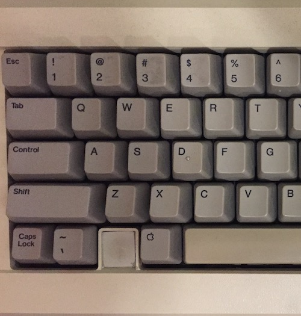

CAPS LOCK SUCKS!
TLDR; The caps lock key does more harm than good. It takes up a lot of valuable space and adds very little (if any) value to the usability of a desktop keyboard. The caps lock key should be replaced with a more useful input key.
Forgive the gratuitous use of capital letters in the title. I recently had occasion to use a keyboard with the caps lock key enabled. I have altered the functionality of this key on all of my personal and work computers, so I was caught off guard by how annoying caps lock is. It is a relatively large key that sits in a high traffic area. While it could be providing some helpful shortcut like its neighbors TAB and SHIFT, it is instead devoted to making it easier to mess up passwords and shout on the internet. This experience of using a keyboard with caps lock enabled reminded me that the caps lock key is a terrible idea.
The most basic problem of the caps lock key is that it is a modal key. It modifies the functionality of the entire keyboard. There is a ton of research on how having multiple modes on a keyboard (or user interface in general) makes it really confusing and hard to use. The great HCI pioneer Larry Tesler made a successful career out of the mantra 'no modes'. If you have ever used copy/paste shortcuts in a text editor then you are the immediate beneficiary of his sage insight. One of the basic problems with modes is that once a new mode is engaged the keyboard is completely different with no visible change. If you have ever accidentally tried to enter a password with caps lock on then you know first hand that this is a problem. In fact it is such a problem that modern MacBooks have added an LED on the caps lock key to let you know that it is on. Apple has even programmed a warning message when you try to log into your computer with caps lock on. This adds 50¢ in BOM cost and God knows how much NRE to solve a problem that does not even need to exist.
Beyond the issue of having a modal toggle, there is the problem that typing in all capital letters is not very useful on a full keyboard (it still makes sense on mobile). The caps lock key was an innovation from the days of typewriters that has outlived its purpose. Back in the era of mechanical typewriters it was only possible to write with a single sized monospaced font. Bold and italic typefaces did not exist. Typing in all capital letters was the only way to emphasize a portion of the text. It was not a great solution and typeset printing never used this style. But typing in all capitals did communicate emphasis within the constraints of a mechanical typewriter, and having a designated key to avoid the mechanical ardor of raising 48 metal keys was a good idea. For the last 40 years, however, we have lived in a world of abundance. We can vary the size, weight, slant and color of a word. We can even make words cycle through every possible combination of these various highlights.
 Historically the caps lock key has not always been a part of computer keyboards. Steve Jobs tried to remove it - twice. A view of the keyboard from the Apple II shows that caps lock occupies a smaller, humbler space in the far left most corner (where the control key is on Windows keyboards). NeXT Computer did away with caps lock completely, and the NeXT Cube shipped with a sleek caps lock free keyboard. It is worth noting that the first ever HTML page was created using a keyboard with no caps lock key.
{kind=link}
The caps lock key is an unhelpful historical artifact, but it is easy to correct. There are comprehensive guides on how to do it on all major desktop operating systems. I personally like changing caps lock to CONTROL on my macbook since this facilitates easy navigation through browser tabs. Google's pixel books use the key to access search which is nice. Microsoft could clone this functionality with Bing/Cortana search. There are plenty of other good choices, and I would frankly say that an emoji like 🙂 would be a better key to choice than the current default.
I realize that a single key on a keyboard is a minor inconvenience. But it is repeated more than a billion times around the globe and it is a completely unnecessary inconvenience. The caps lock key could easily be eliminated and replaced with a more useful alternative. When you consider that Apple, HP, Logitech, Microsoft, Dell, ASUS, Samsung and other computer manufacturers are collectively spending several million dollars a year on keyboard design, it seems reasonable to strive for a small and tangible improvement in keyboard design.